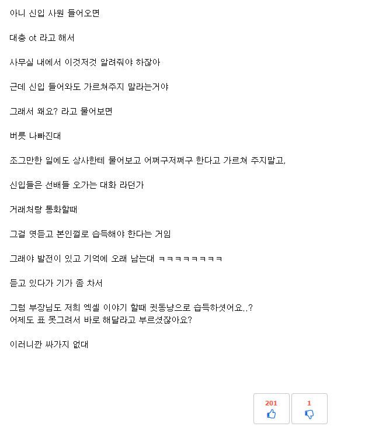

회사 틀딱들 이해가 안가는점이 있는데
댓글
도망가라고 알려주는거잖아 참 선배지
버릇 나빠진대는 ㅅㅂ 신입사원이 개도 아니고
틀딱중에 병신이 많은건 사실이긴함
근데 젊은이들중에서도 힘이없을뿐 이상한 방식의 병신이 많더라... 본문내용은 비슷한 경험이 있어서 공감함ㅋㅋ
신입 사원 들어오면 <- 여기까지만 진실 나머지는 망상
부장님도 엑셀 귓동냥으로 습득하셨어요? <- 사이다썰을 만들기위해서 머리짜낸 대사가 이거
ㄹㅇ ㅋㅋ 업무보다가 상상배설 마려워서 급히 쓴글 티 존나남
회사 안다녀!
ㄹㅇ 주작이지 아무리 ㅈㅅ라도 월급주고 일 시키는데 신입이 어리버리하면 사장한테 윗대가리가 딲이는건 군대나 회사나 마찬가지임.
팡숀?
ㅋㅋㅋㅋ 취직 한번도 안해본 새끼가 썼나보네
뭔 대장간이여?
지랄 소설좀 읽어라너는
지금 회사 부장급들이면 20대 애들보다 엑셀 더 잘함. 그리고 엑셀 못한다는 예시가 표를 못그려서 이 지랄ㅋㅋㅋㅋㅋㅋㅋㅋㅋ
Xx야 팡숀 쓰지말고 수기로 입력해!
주작 같으니 진실임
ㅈ소 기준 나이많은 생산직 부사수로 가면 저거랑 비슷함 ㅋㅋㅋ 자기 밥줄이라고 일 제대로 안가르쳐줄라고함
부장이 엑셀표도 못만든다고? 그건 좀 구라같다
ㅈ소면 이해 됨..
최소한 기초라도 알려주고 이후 교육을 하든 뭘 하든 하면 되는데
곧 뒤져도 안 알려줌 좆소 커리큘럼 낭만 넘친다 그죠?? ㅋㅋㅋㅋ
마지막 바로위 문장이 아쉽네 3점
막줄에서 바로 소설
??(4050): 회사가 학교야??
학교가 아니니까 더 잘 가르쳐야지 ㅋㅋㅋㅋ
우리팀장도 진짜 병신중에 병신인 사축인데
썰풀면 대하드라마라 구라라고 할듯
풀어봐
저런상황에서 싸가지 없다는 말들으면 맞는말 한거임
개좆소임?